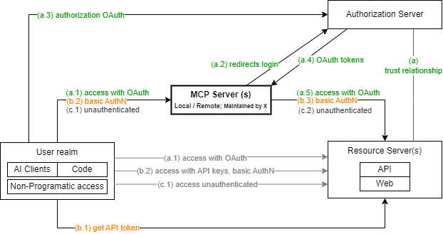
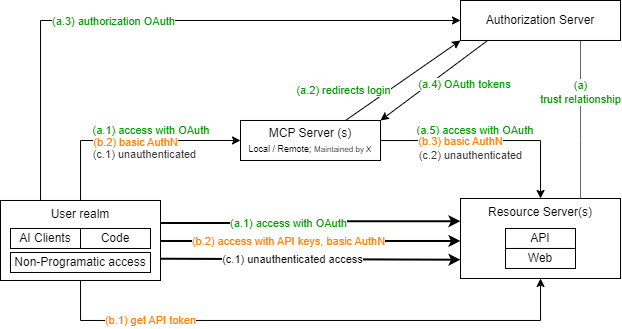
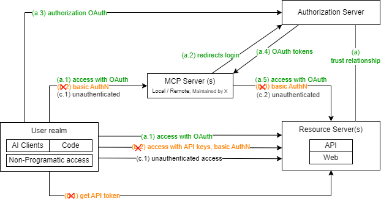

MCP Kool Aid
At first, it may look like I am against MCPs. But this is such a bold statement, especially considering all the different factors and usages this protocol has. This blog post is split into two sections.
Part 1 - MCP Kool Aid
I spent the last few months trying to convince myself that MCP and MCP implementations are not an overengineered solution to an age-old problem. I over-engineer all the time. And overengineering is usually a sign that there’s a more fundamental issue I am trying to avoid.
So, I immerse myself in podcasts that discuss the usefulness of MCP whilst walking to the supermarket or riding my bike. There are even MCP-specific conferences that have moved on from even answering the question about its usefulness.
My first thoughts on MCP: It's an overengineered solution. And it feels like I'm saying the Earth is not flat at a Flat Earther's convention. I guess the problem here is that I want to keep the door open to innovation, and the next big thing. But I also like to be the devil's advocate.
The MCP vs API Conundrum
Every MCP implementation I see, I question and suggest, "Could this have been done with an API endpoint?". And so far, I have not heard an absolute no. Many times, I get the somewhat unsettling answer of what would be the fun in that?
These are the recent podcasts and resources I have listened to. They all acknowledge that the problem MCP is solving/simplifying is not new.
- MCP vs API: Simplifying AI Agent Integration with External Data
- Why MCP really is a big deal | Model Context Protocol
- Model Context Protocol (MCP) Overview - Why You Care!
Is MCP really simplifying the problem, or is it shifting the effort elsewhere?
- You still need to define the MCP Client to speak to each specific MCP Server, in the AI client.
- You'll hand over the workflow to this wrapper, which will call a set of tools (which are just a single or a chain of API calls in the end) - whether local or remote.
- The MCP server still needs to be maintained and kept up to date in accordance with the APIs.
Lack of documentation for APIs is often mentioned as another argument in favour of MCP. I have heard "everyone knows API documentation is never up to date". My question then is, what makes us think that the MCP server will be kept up to date?
API Call Wrapper - Useful Abstractions?
I can see how MCP could be useful, compared to the existing API endpoint calls: When these MCP endpoints provide some sort of chaining of API calls in order to achieve a goal. Albeit, in most implementations today, this API call chaining does not really exist in a useful format and it mostly performs a one-to-one mapping of actions.
My theory on why it's not that useful: Because someone, the MCP Server creator (vendor or not), still needs to define, document, test and maintain all the workflows they are allowing through the MCP Server implementation. When the APIs change, they will need to update the MCP server.
I say these things with an incredulous face, because I question myself - Am I really the only one seeing how this doesn't actually solve the problems and challenges that have been put forward by all the podcasts and videos I have seen. Am I missing something BIG time?
MCP tools that wrap API endpoints are just a further abstraction away from the internals of how the platform works. And you know what else is an abstraction from those internals? Good REST API endpoints.
MCP - It's in the Name
MCP stands for Model Context Protocol. And that is all it is, a standardised way of sending messages across in a standardised way. If you can deploy a piece of compute that sends JSON in a special format with special headers, you have an MCP Client. If you can configure some runtime workload to receive REST API endpoints that are formatted in a specific way with specific headers, you've got yourself an MCP Server.
Part 2 - Threat and System Models
Regardless of my opinions on the usefulness of MCP, it is a journey, and Rome was not built in a day. We may be seeing only the scaffolds for MCP servers where "Additional tools and capabilities will be added to the {VENDOR} MCP Server on an ongoing basis.".
AI Client Usage Evolution
MCP feels like the natural evolution of AI client usage for multiple use cases. The evolution may look something like this:
- Initially, users request AI clients to work from the data/code/docs available locally. Users need to store the data locally and keep it up to date.
- Later, users start requesting scripts to retrieve and process data available through querying (likely authenticated) REST API endpoints to do get more data. A script needs to be executed and the results are used by the AI client.
- Then, request the AI client to directly and dynamically access the endpoints and perform those workflows by itself. Users do not need to manually/programmatically retrieve the data so that the AI client can use it.
MCP seems to address (3), how AI clients can interact directly with other systems.
In any case, I usually stick to level (2). I also like to call this the creation of custom-made RAG engines, though it depends on the use case. I also know of cases where users go from (1) --> (3), without attempting (2), and only use (2) as a last resort - an example of this is in the last sections.
*Why would someone do a custom-made RAG engine? Well, I'm an engineer. Engineers like to automate things. We have been automating things this way for years, scripts that GET some data, process it, and then POST and PUT some data based on that. Asking the AI client to create scripts that mimic this workflow is part of my day. Takes 1m to generate the scaffolding.
Example use cases:
These two use cases are very similar, but I do want to call them out separately as examples.
---
**For users who, like me, use AI clients and LLMs to develop automation workflows/scripts:**
1. Initially, requesting scripts to process data available locally.
2. Then, creating/requesting scripts to retrieve and process data available through querying REST API endpoints to get more data.
3. Then, users just want to ask the AI client to directly access the endpoints and perform those automation workflows by itself.
---
**For users who use AI clients and LLMs to code applications and features:**
1. Initially, requesting the AI client to generate the features using data/code/docs available locally.
2. Then, users start creating (or requesting) scripts to retrieve data/code/docs available through querying (mostly) REST API endpoints to get more data.
3. Then use cases start to emerge, and instead of going through a script, the user just wants to the AI client to dynamically access the documentation of one or more platforms automatically.
Dive on (3) - MCP to Interact with Other Systems
Why is it hard to adopt in the enterprise? Different low-level risk models arise depending on the design and use case adopted. And multiple designs may be in place at the same time. MCP-specific considerations include:
- MCP Server hosting model - Local or Remote (affects: supply chain risk, DLP risk). People tend to take sides on which one is the best, but this cannot be looked at in isolation.
- MCP Server maintainer - Vendor-backed, in-house custom or external/open source (affects: supply chain risk, DLP risk, maintainability). Regardless of the hosting type, the MCP Server may be developed by anyone, especially in the age of AI. Rogue MCP servers are a threat (local or remote).
- MCP Server authentication protocol - OAuth, basic authentication, unauthenticated (affects: poor secret management risk, DLP risk)
- MCP usage model - Are we creating an MCP Server, being an MCP Client, or both? Understanding this will help apply the right mindset.

The risks we can think of when using MCP are below. All are at scale because we're always thinking about it from an automation perspective - and everyone has gone through the Ctrl+C spamming experience after running a script that mistakenly modifies files or a platform.
- Unintended changes to systems, at scale
- Data exfiltration, at scale
- Malware/ransomware (especially if using rogue MCP servers or even rogue resource servers)
And for all of these, we can argue we have mechanisms to control them - especially as we look into what MCP servers are allowed, from an enterprise perspective, what tools, aka API wrappers, they are allowed to run (i.e.: read-only), and maybe even ensure strong OAuth authentication where applicable.
Dive on (2) - Non-MCP Programmatic Access & Risks
MCP is not the only way AI Agents can reach your data and services.
But! Notice the diagram has additional flows, independent of any MCP. What are these flows and why are we not looking at them? These additional flows, now highlighted, are just readily available standard ways to access data in other systems/platforms that do not rely on MCP.
Ultimately, they translate into more API calls. And the access could be classed as:
- Programmatic access (via AI Clients, or via code/scripts - written by users or by AI clients)
- Non-programmatic access (users accessing the web directly or some sort of interface)

How does this differ at all from MCP? For programmatic access, it doesn't massively change the picture. You'll still ask an AI client will create scripts that use the credentials being fed and will just run it against the systems. Even outside an AI client, with manually written code, the large scale consequences of buggy scripts have been seen.
- Unintended changes to systems
- Data exfiltration
- Malware/ransomware (especially if using rogue resource servers)
The non-programmatic access is the usual, going through the browser or through a Click-Ops interface. Things like for loops and unintended consequences are less likely (reduced scale) and less likely to translate into unintended changes.
This is starting to highlight the dangers of automation. But with an increased focus on unintended and large scale changes that come from the adoption of AI Clients. In a way, we're looking at controlling access to APIs.
Focusing on AI Clients
I think the gap here has been, have enterprises really considered the risks attached to enabling the use of AI Clients, and how much simpler it is to create a script that works, with no proper review, within the comfort of my own machine? Especially having into consideration what other controls they may have, or not.
What are the typical risks associated with API/programmatic access? (+) What happens when we layer AI Clients on top?
- Poor secret management, API key leakage
- Ungoverned use of APIs
-
- Scale (speed and volume) of changes
It is not the risks associated with MCP. MCP is just a wrapper on what the AI client could ask for/do. Especially if we only allow trusted MCP servers, with specific tools and good authentication protocols, arguably, that provides a more governed AI-enabled programmatic access than allowing each user to create their own custom-RAG mechanism.
MCP to Enable Safe AI-enabled Programmatic Access
Consider this scenario:
- User Alex is using an AI Client GitHub Copilot.
- They want to start reaching a platform/service ApprovedProductivityTool from their AI Client.
- ApprovedProductivityTool has an MCP server that fits Alex's requirements.
- Alex requests the MCP server to be allow listed, inclusive to only allow for Read-Only access.
- Administrator Tony says
no. - Alex goes away and does not set up the MCP server.
- Alex is an engineer, and eventually, since they cannot use the MCP server, but still need the dynamic data retrieval, they instruct the AI Client to create scripts that use locally stored credentials with Alex's permissions (read and write)
- Are we in a better or worse state?
What would be the alternative? If we enabled MCP usage, Alex would not feel the need to generate API keys, storing them locally and letting the AI Client generate its own solution for Alex's problem. We could lock down certain pathways to access the resource service programmatically, such as, disabling the ability to create API keys. And shape how we allow APIs to be used. This is where the conversation around an API gateway is also useful.

I'm not sure about the completeness of this view/solution! BUT, the key point is, we could look at MCP servers to obtain more visibility on how our APIs are being accessed programmatically, in particular when AI Clients take part in this. And it seems I'm not the only one --> MCP is Dead; Long Live MCP!
I guess what I'm trying to say is, everyone seems to be scared of MCP, but actually, it looks like a very good idea when compared to the custom code people (including me) could, and are, generating.
It's worth thinking about some problems if we wanted to make this quite locked down and a deterministic control... How to deal with use cases where:
- Programmatic Access that really is not via an AI client (i.e.: my scripts, I still want to do my deterministic reports)
- MCP Servers are not yet useful (likely because they are not ready, because someone still needs to do the work - check Section API Call Wrapper - Useful Abstractions?)